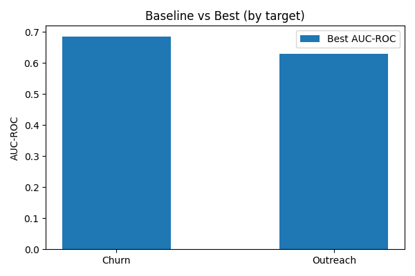
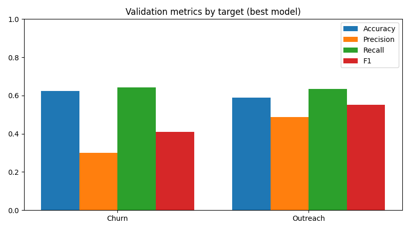
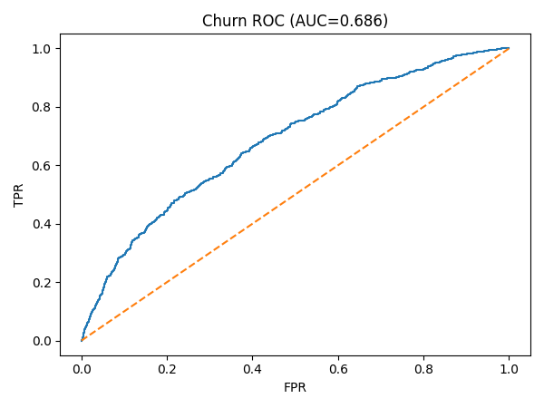
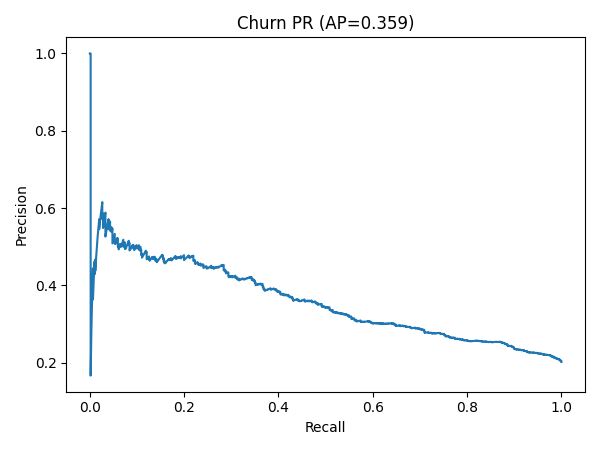
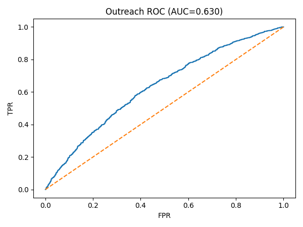
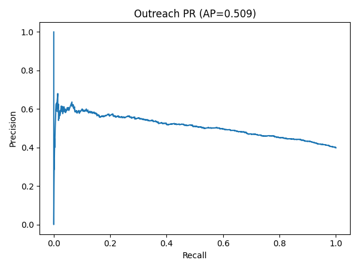
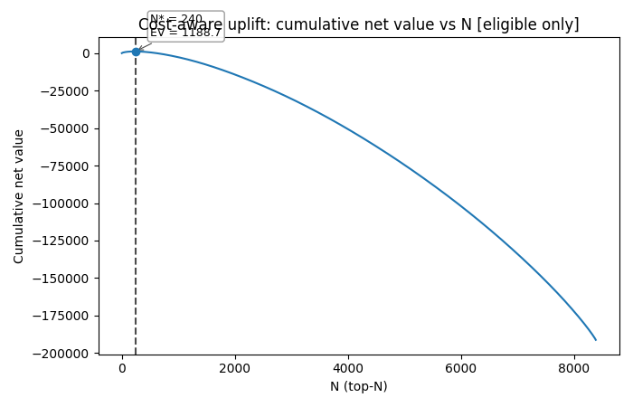
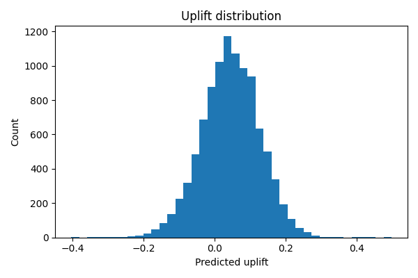

Model & Uplift Report
summary_compact.csv
(best-by-target with AUC/PR-AUC/Acc/Prec/Rec/F1)
metrics_two_best.csv
(all candidates)
n_summary.csv
recommended_n.json
— N*=265, Total EV=1438.674844767983, Avg/member=5.428961678369747, B=150.0, C=30.0, uplift=logreg
outreach_list_uplift_netvalue.csv
Baseline vs Best (AUC)

Validation metrics

Churn
 
Outreach
 
Uplift

